07 / Robotics · Mechanical design & control
Robotic Arm Development
Three arms, drawn and partly built as separate machines. The modular arm packs a NEMA 17 and a printed gearbox into each joint. The foldable desktop arm uses MG995 and MG90S servos. The planar arm uses MG995 servos and is the one I am building for chess.

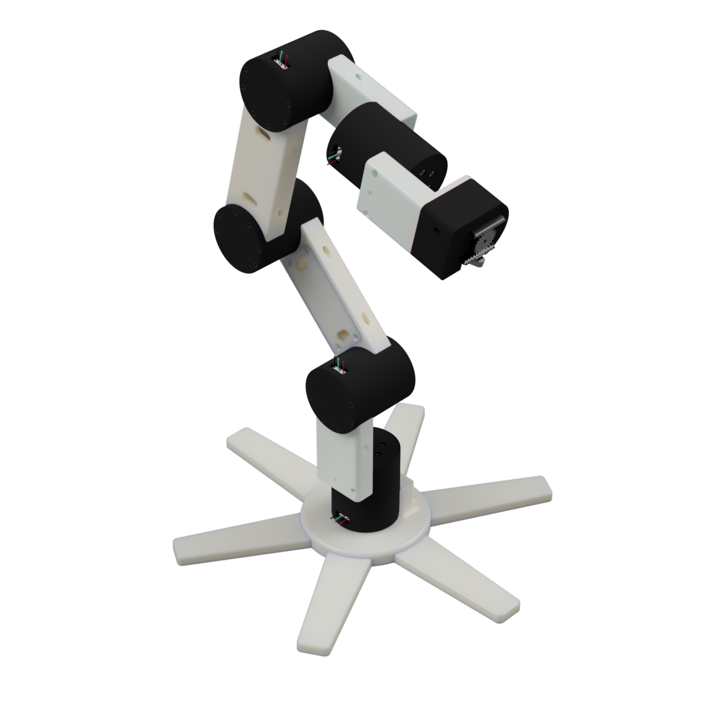

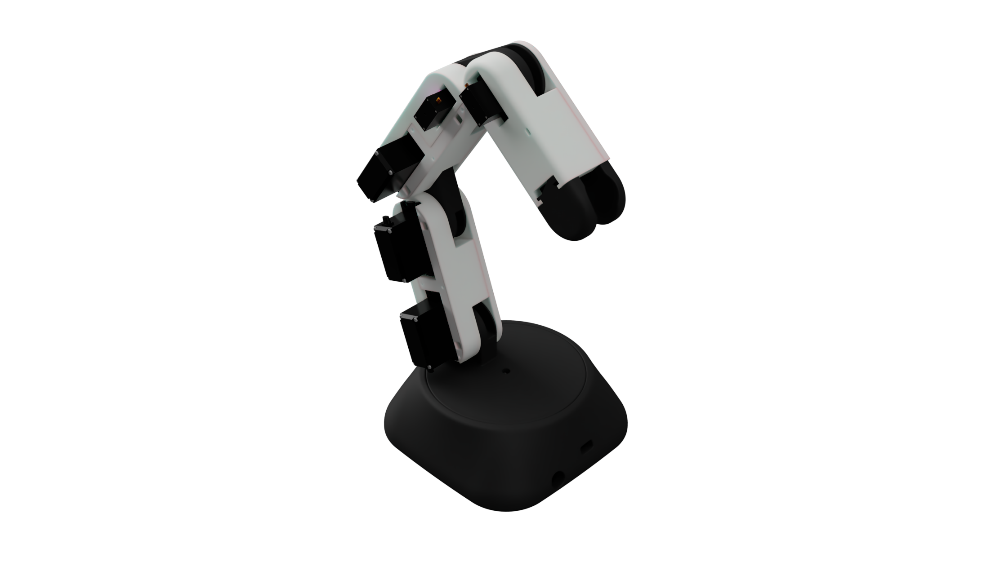
Select any figure to inspect it at full size. Assembly and component images are CAD renders; the chess digital twin is a software view.
01 / Modular Robotic Arm
Modular Robotic Arm
Each joint on the modular arm is a capsule: a NEMA 17 stepper and a 3D-printed gearbox in one housing. White links bolt those capsules into an arm.
The design develops the joint as a reusable mechanical unit. Motor packaging, the gear train and its supporting housing are brought together within the capsule; link geometry then determines how the modules are arranged through the arm. The black cylindrical housings make that repeated architecture visible in the assembly.
The radial base spreads outward around the first joint. Farther up the chain, the links connect capsules in different orientations, producing the changes in direction seen in the articulated poses. The upright view shows the same assembly with its links aligned, making the succession of modules easier to follow.

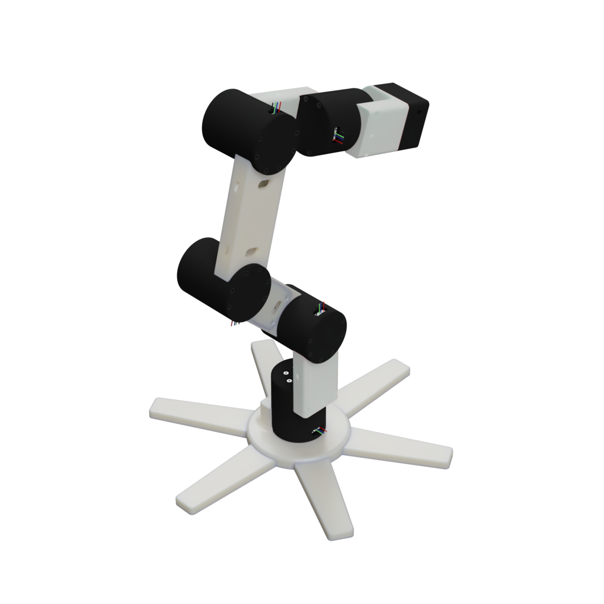

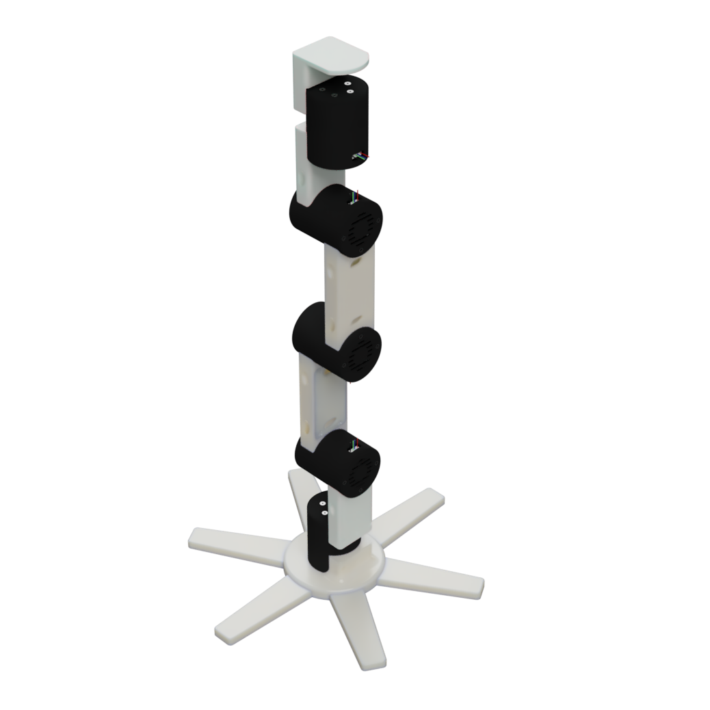
Modular Robotic Arm / Joint detail
Motor capsule and gearbox
The capsule is the central mechanical development in this arm. A stepper motor, printed reduction mechanism, housing and output connection must work together as one joint. The CAD includes separate motor, shell, cap, gear, carrier and bearing components, along with printable exports.
The component views below show the motor-housing CAD models. They show the parts used during capsule development, separately from the complete arm. The NEMA 17 model establishes the motor envelope; the outer shell and end cap define the surrounding package and closure.
The planetary gearbox model includes a sun gear, planet gear, planet carrier and ring-gear output. The individual views expose tooth geometry, the carrier and the output part without hiding them inside the assembled capsule.

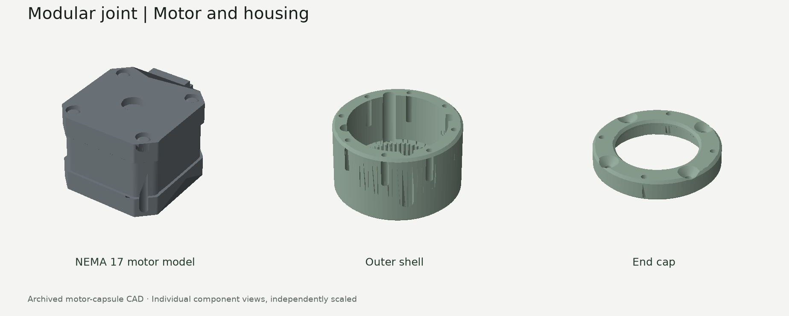

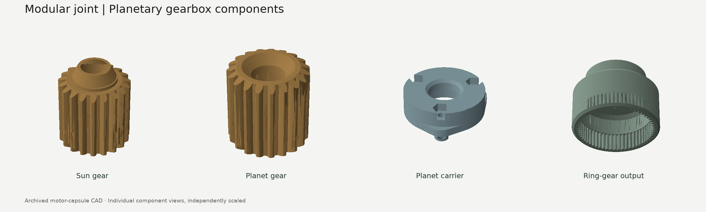
Packaging the actuator
The motor and gear train share a compact joint housing. The shell, cap and output interface connect the internal mechanism to the arm’s structural links.
Developing printable parts
Separate CAD and STL files preserve the gears, carrier and housing as individual parts. This supports iteration on the joint module independently of the complete arm assembly.
Assembly development
Separate motor, bearing, housing and gear components make it possible to inspect how the joint fits together before integrating the capsule into the complete arm.
02 / Foldable Desktop Robotic Arm
Foldable Desktop Robotic Arm
The Foldable Desktop Robotic Arm uses a mixture of MG995 and MG90S servos. Its CAD combines a rounded black base, white structural links and externally mounted servo bodies. The two servo sizes are part of this arm’s actuator selection; the renders show how the motors fit around the links and joint connections.
The folded and extended configurations are useful views of the same design. In the folded arrangement, the links sit closely together above the base. Extending the arm exposes the spaces around the joints, the side-mounted actuators and the end mounting region.
Showing both sides makes the packaging easier to understand. One side gives a clearer view of the servo bodies and mounting features, while the opposite side shows the continuous link faces and the arrangement of the joint connections.

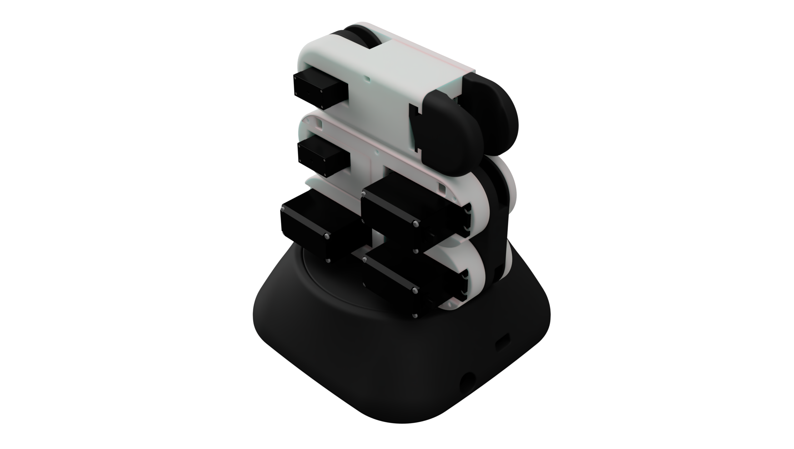

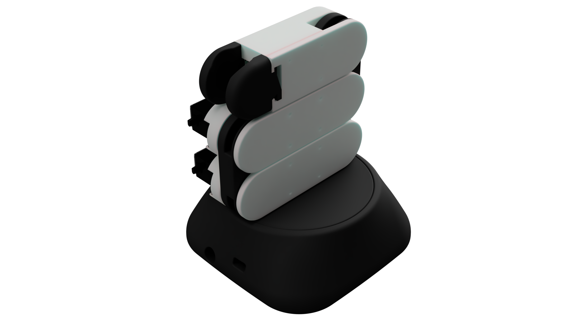

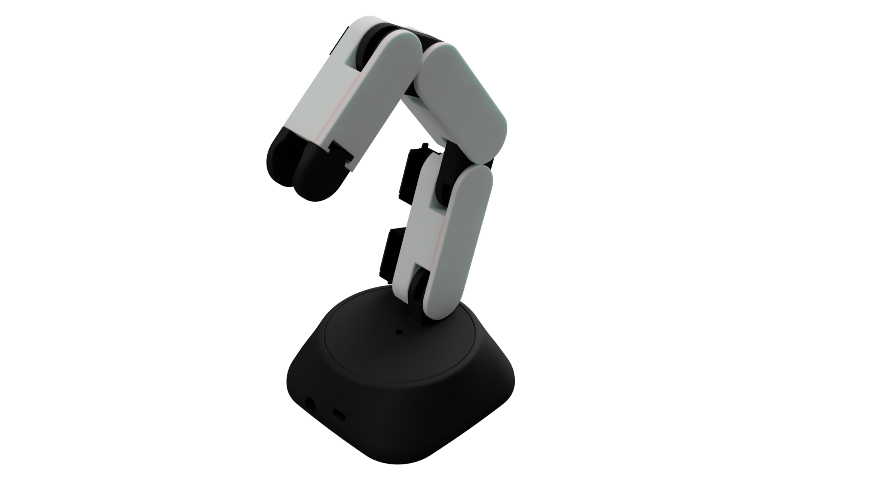
03 / Planar Robotic Arm
Planar Robotic Arm
The Planar Robotic Arm uses MG995 servos. The chess system pairs two of these arms around a shared board. Each arm has three rotary joints, keeping the tool at a fixed working height while moving it in the horizontal plane.
The tool uses an electromagnet to move the playing pieces. Because the pieces slide along the surface, the robot needs a clear route through the board; it cannot lift a piece over its neighbours. Path planning has to respect that. The arm cannot hop over a piece.
The full layout includes a captured-piece rack on each side of the board. The software tracks both the logical chess position and the physical inventory, so capturing a piece also requires planning its transfer into a rack. Only one arm enters the shared workspace at a time, with the other parked.

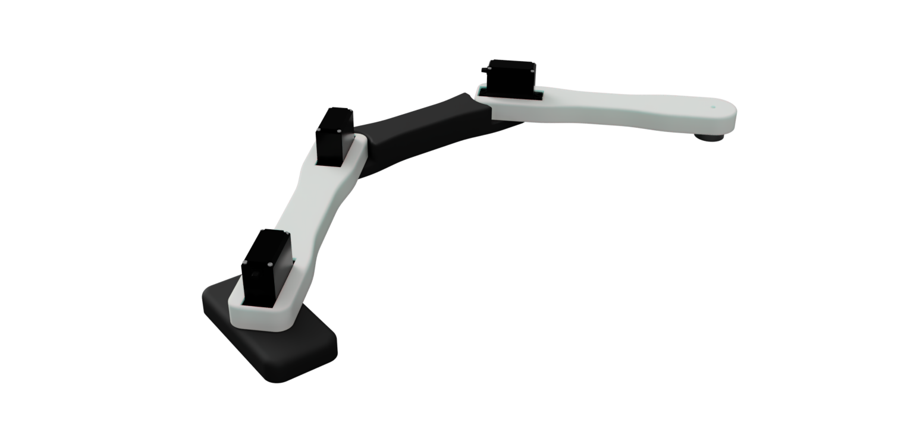

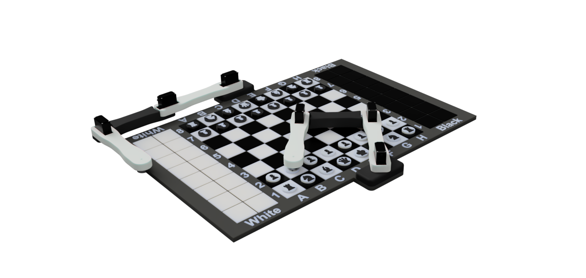

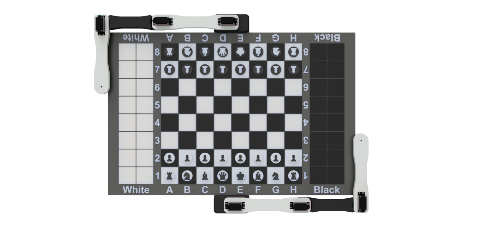
Geometry and reach
The current software specifies 200 / 160 / 180 mm links, measured between joint axes and the tool centre. Its 640 × 400 mm work surface includes the board, two racks and separating gaps.
From a move to a trajectory
The planner converts a chess move into physical transfers, searches for a clear piece path and checks whether the arm can reach the waypoints. A blocked or unreachable route is rejected instead of being forced through surrounding pieces.

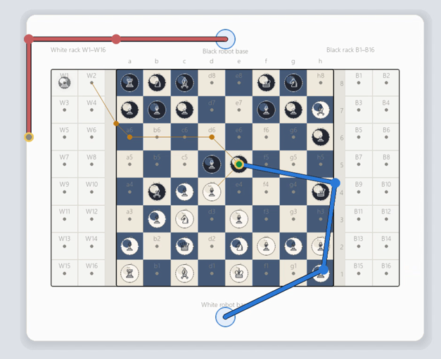
Software and embedded development
Bringing the joints under control
Control development covers manual servo commands, serial communication, camera streaming and kinematic visualization.
The early scripts isolate individual functions: generating a servo command, displaying a camera feed, reading a distance sensor or drawing a kinematic chain. Working with these functions separately makes their behaviour easier to inspect before integrating them into a larger control application.
| Implementation | What the code does | Development scope |
|---|---|---|
| Arduino joystick | Commands six servos from two joystick axes and a push button. The vertical axis adjusts servos 1–5 together; the horizontal axis adjusts servo 6. | Direct manual control, with a button that restores preset command positions. |
| Desktop serial control | A Python/Tkinter interface provides six angle sliders and sends a servo number and angle over a 115200-baud serial connection. | A separate communication routine checks input ranges and waits for an acknowledgement. |
| Kinematic visualization | Uses joint angles and rotation matrices to calculate link positions and display local coordinate axes in a 3D plot. | Interactive visualization of calculated joint positions and coordinate axes. |
| ESP32 camera | The XIAO ESP32-S3 camera implementation serves a live MJPEG stream over Wi-Fi. | Live camera access for visual monitoring and sensing experiments. |
| Chess control stack | The PC handles chess state, inventory, path planning and inverse kinematics. An ESP32 gateway routes commands to two ESP32 arm controllers, each driving three MG995 servos and an electromagnet. | Software simulation, mock hardware support and a documented hardware bring-up path. |
Testing and verification
Testing & verification
Test routines cover low-level actuator commands and automated chess-planning checks. The servo scripts exercise individual and multiple output channels; the chess tests exercise geometry, piece handling, paths and control sequencing in software.
| Check | Purpose | Test implementation |
|---|---|---|
| Single-servo commands | Exercise pulse-width commands independently before coordinating several outputs. | Raspberry Pi GPIO test script with timed command changes. |
| Multiple-servo movement and holding | Command several channels and repeatedly send a nominal holding pulse. | Separate movement and hold-position routines. |
| Serial command handling | Restrict servo indices and angle inputs, send a command and inspect the device response. | Interactive communication-test implementation. |
| Chess paths and inventory | Check transfers, captured-piece placement, board geometry and collision-aware piece paths. | Automated chess-planning test cases. |
| Chess hardware sequencing | Park the opposite arm before a transfer, order magnet operations and handle communication faults. | Mock-transport tests covering arm parking, magnet sequencing, timeouts and faults. |
Engineering focus
From a reusable joint to a complete task
The Modular Robotic Arm centres on its motor-and-gearbox capsule. The Foldable Desktop Robotic Arm explores mixed-servo packaging and articulated motion. The Planar Robotic Arm carries the mechanical design into a chess-playing task, where geometry, piece clearance, inventory and motion sequencing must agree.
Together, the work connects component CAD, printable mechanisms, actuator integration and control software.